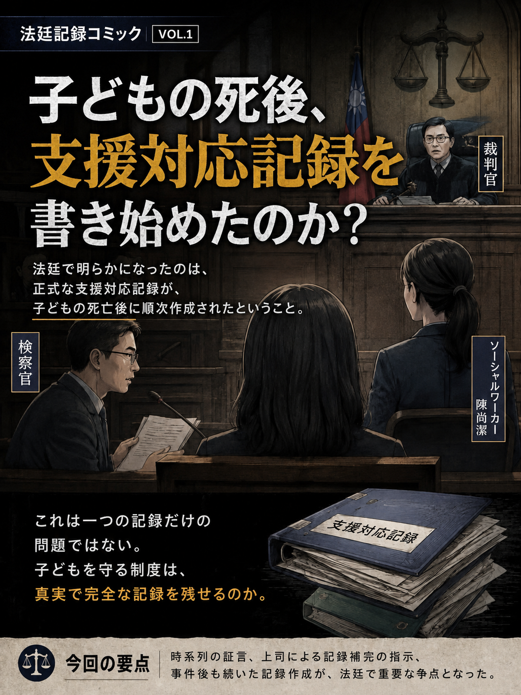
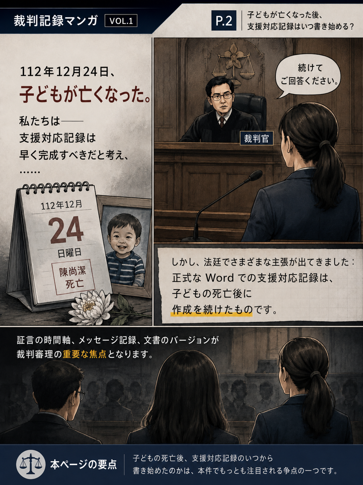
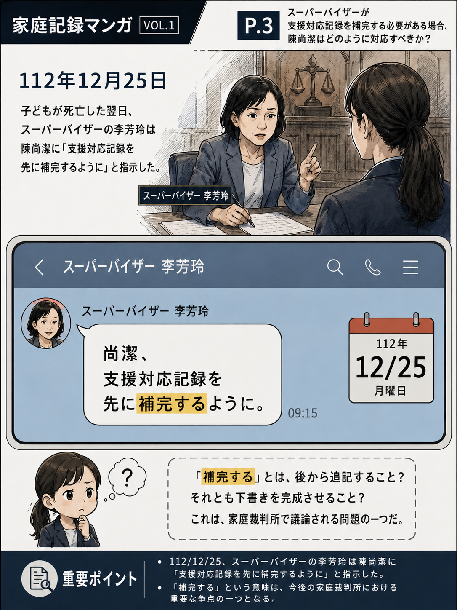
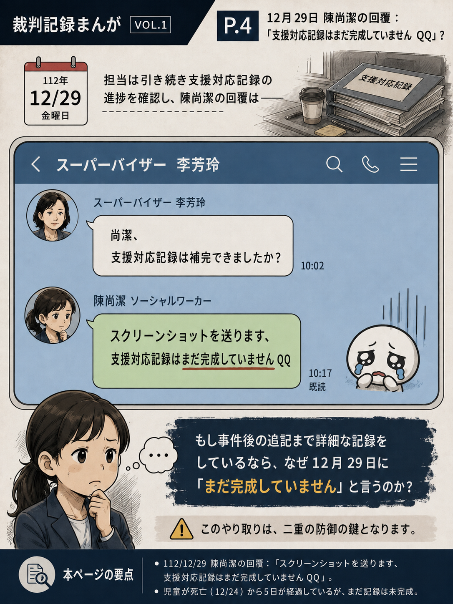
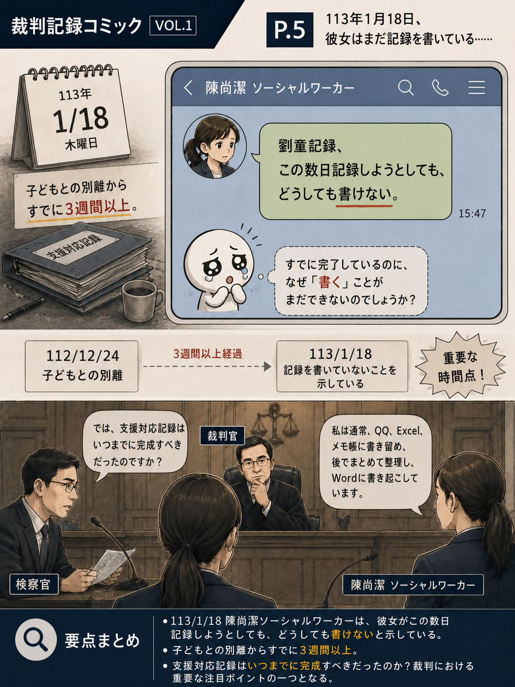
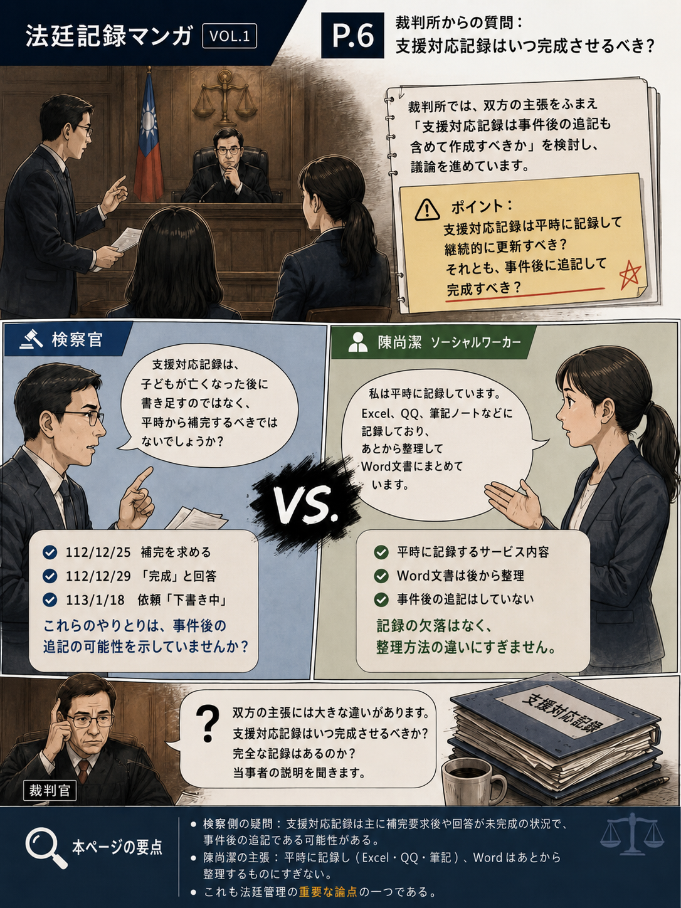
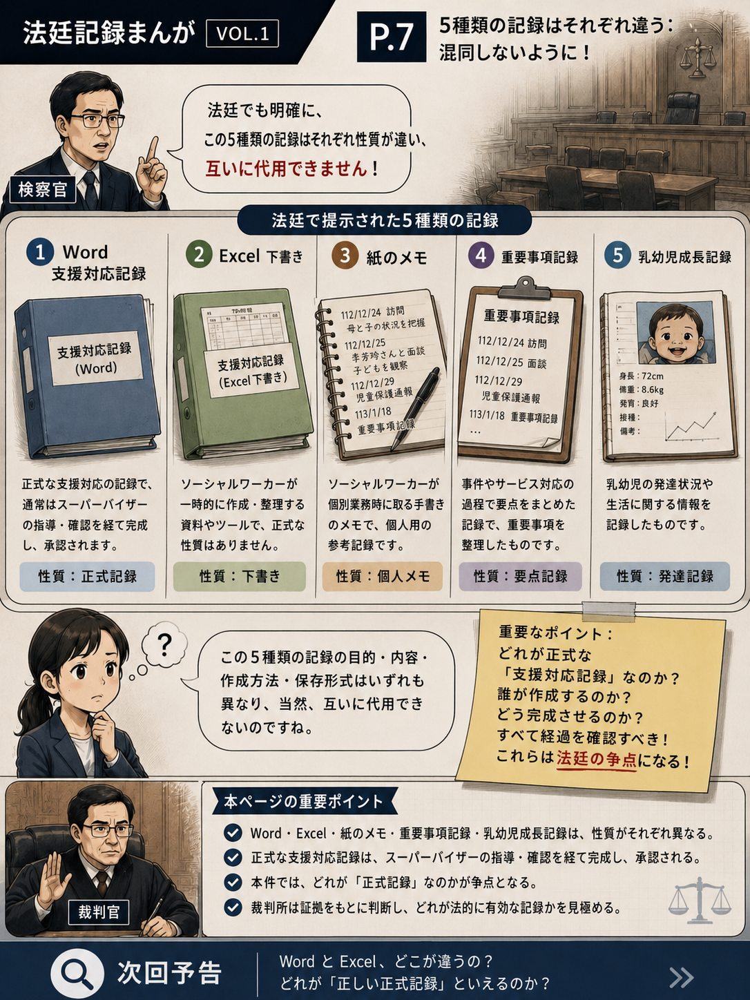
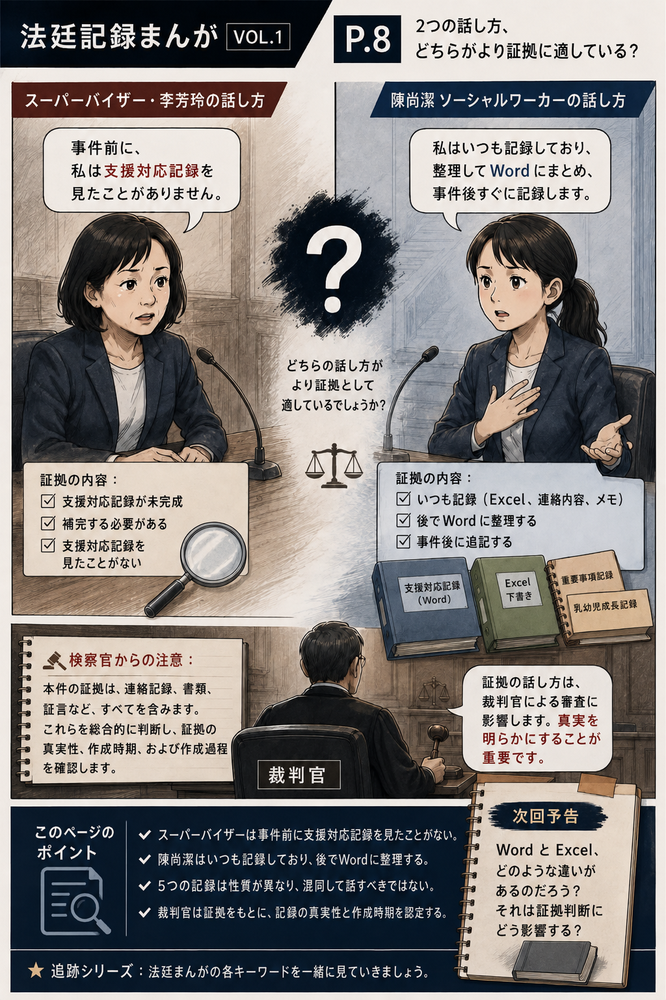

VOL.1P.1
法廷記録コミックス VOL.1｜1ページ目

裁判公開情報編纂作業記録を活用し、時系列、文書バージョン、両当事者の陳述を掲載し、本件争点の理解を容易にしています。
児童福祉同盟のソーシャルワーカー、陳尚潔さんの事件の第一審の裁判記録を提供してくださった張さんに感謝します🙏
この記事は、裁判の要点を写真と文章で整理し、カイカイ事件を心配する友人が裁判の内容をよりよく理解できるように、裁判の様子をもとにまとめた内容です。
公開情報の整理を通じて、より多くの人々が引き続きこの事件に注目し、理解し、裁判の内容から児童保護の労働文化、実務、専門的責任の中でなお検討すべき点について考えることができることが期待される。
漫画の画像は Web ページに直接埋め込まれており、ページごとに直接読むことができます。

P.2
P.3
P.4
P.5
P.6
P.7
P.8